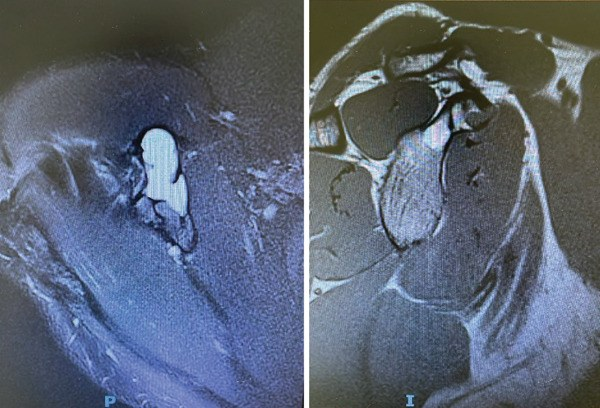

330 — U xương theo Lodwick, tuổi, vị trí & don't-touch / Bone tumors
Tags: pattern:u-xuong vung:xuong score:Lodwick
Mức chắc chắn (certainty): tổng hợp y văn (literature synthesis) — nhóm tự biên từ y văn mở, chưa gắn ca nguyên văn đơn lẻ.
1. Tổng quan — vùng chuyển tiếp là tốc độ, tuổi-vị trí là danh tính
- Mọi tiêu xương đánh giá bằng vùng chuyển tiếp (zone of transition) — TẠI SAO: ranh giới rõ (vẽ được bằng bút chì) = xương có thời gian phản ứng tạo viền đặc (lành, Lodwick IA có viền/IB không viền); ranh giới mờ gặm nhấm (moth-eaten II) / thấm (permeative III) = u phát triển nhanh hơn xương phản ứng (ác hoặc viêm cấp). Ngoại lệ > 40 tuổi: myeloma/di căn vẫn có thể vùng hẹp.
- Tuổi + vị trí dọc trục chốt danh tính: đầu xương (epiphysis) chưa khép sụn (< 20 tuổi) = chondroblastoma; khép sụn (20–40 tuổi) sát mặt khớp = GCT; thân xương trẻ 5–20 tuổi thấm + vỏ hành = Ewing.
- Ngưỡng: nidus u dạng xương < 1,5–2 cm** + đau đêm đỡ aspirin; đảo xương đặc **> 885 HU loại trừ di căn đặc; mũ sụn u xương sụn > 1,5–2 cm nghi hóa ác.
2. Gamut tiêu xương theo tuổi-vị trí (Gamut)
- Đầu xương chưa khép + canxi chấm: chondroblastoma — nạo + ghép.
- Đầu xương khép sụn + sát khớp + không viền: GCT 20–40 tuổi — nạo + xi măng (tái phát!).
- Hành xương + mức dịch-dịch: ABC — nạo + cầm máu (USP6).
- Vỏ hành xương + thấm + hành: NOF tự khỏi (don't touch); thân xương + vỏ hành + thấm = Ewing (mổ+hóa).
- Đám mây ngà + Codman/tia mặt trời: osteosarcoma — hóa trước mổ.
3. Bảng so sánh phân biệt (ma trận đối chiếu)
| Thực thể (entity) | Hình ảnh điển hình | Chốt vào (rule-in) | Chốt loại (rule-out) | Gợi ý xác nhận |
|---|---|---|---|---|
| GCT | Đầu xương khép sụn + sát khớp + lệch tâm + không viền | 20–40 tuổi + chạm xương dưới sụn | Chưa khép sụn → chondroblastoma | Nạo + xi măng + theo dõi tái phát |
| ABC | Phình + vách + mức dịch-dịch MRI + Lodwick IB-II | Fluid-fluid + trẻ + hành xương | Viền đặc dày + tự cốt hóa → NOF | Nạo + nút mạch chọn lọc |
| Osteosarcoma | Đám mây ngà + Codman + tia mặt trời + thấm | Cloud-like + màng xương ác tính | Vôi hóa vòng-cung → sụn | Hóa tân bổ trợ + mổ rộng |
| Don't-touch (NOF/đảo/myositis) | NOF đa cung vỏ + tự khỏi; đảo > 885 HU + chân rết; myositis vôi ngoài-trong | Vỏ kín + HU cao + vôi chu vi | Vùng rộng + đau đêm → ác | CẤM sinh thiết, theo dõi |

Trái: T2 nang sáng. Phải: vách + mức dịch-dịch điển hình, không lan phần mềm. Nguồn: Castanheira et al., Case Rep Orthop 2026 Fig. 2, CC BY 4.0.4. Protocol + Lodwick flowchart
- X-quang 2 bình diện (vùng chuyển tiếp + matrix) → MRI (mức dịch, nidus, lan mềm) → CT (HU đảo xương, nidus) → sinh thiết có kế hoạch (đường mổ nằm trong đường mổ triệt căn!).
flowchart TD
A[Tiêu xương] --> B{Vùng chuyển tiếp?}
B -->|Hẹp IA-IB| C[Tuổi + vị trí: GCT/ABC/NOF]
B -->|Rộng II-III| D[Ác/viêm cấp: sinh thiết]
B -->|Vôi vòng-cung| E[Sụn: enchondroma/chondrosarcoma]
5. Cạm bẫy
- Sinh thiết don't-touch (NOF/đảo/myositis) = sai lầm kinh điển — vỏ kín + HU > 885 + vôi chu vi là đủ.
- Myositis ossificans tưởng osteosarcoma ngoài xương — vôi ngoài-trong sau 2–6 tuần vs trung tâm-đặc ngoại vi.
- Sinh thiết sai đường làm nhiễm bẩn khoang — hội chẩn trung tâm sarcoma trước mọi sinh thiết nghi ác.
6. Tự lượng giá — Blind Quiz
Ca 1 — Đau vai âm ỉ, nang mỏm quạ có vách. Đọc MRI.
- Hỏi: mức gì trong nang? Lành hay ác? Xử trí?
Bấm để hiện đáp án
- Dấu hiệu (findings): nang phình có vách + mức dịch-dịch (fluid-fluid) + không lan phần mềm.
- Chẩn đoán (diagnosis): nang xương phình mạch (ABC) — nạo + ghép xương (tái phát 15–30% nếu nạo đơn thuần).
- Nguồn: Castanheira et al., Fig. 2, CC BY 4.0.
Ca 2 — Đầu gối 25 tuổi + tiêu lệch tâm sát khớp không viền: GCT hay chondroblastoma? (Bảng mục 3.)
Bấm để hiện đáp án
- GCT: khép sụn 20–40 tuổi + sát mặt khớp (chondroblastoma là chưa khép < 20 tuổi).
Ca 3 — Nốt đặc đùi 1200 HU + chân rết + không đau: di căn hay đảo xương? Sinh thiết không? (Bảng mục 3.)
Bấm để hiện đáp án
- Đảo xương (enostosis): > 885 HU + thorny radiation — CẤM sinh thiết, theo dõi.
Bài liên quan chéo
- 300 – Tổng quan MSK
- 310 – Xương phụ (vỏ kín)
- 331 – Myeloma/di căn (dự kiến viết sau)
Không dùng để chẩn đoán độc lập khi chưa có người hướng dẫn.